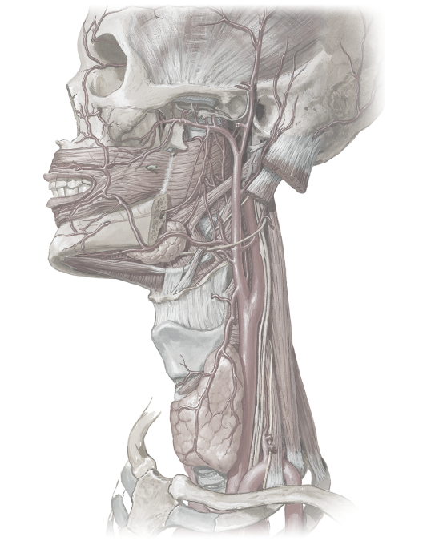

Middle meningeal artery
Buccal artery
External carotid artery
Superior thyroid artery
Common carotid artery
Subclavian artery
Internal carotid artery
Facial artery
Maxillary artery
Superficial temporal artery
1
2
3
4
5
6
7
8
9
10